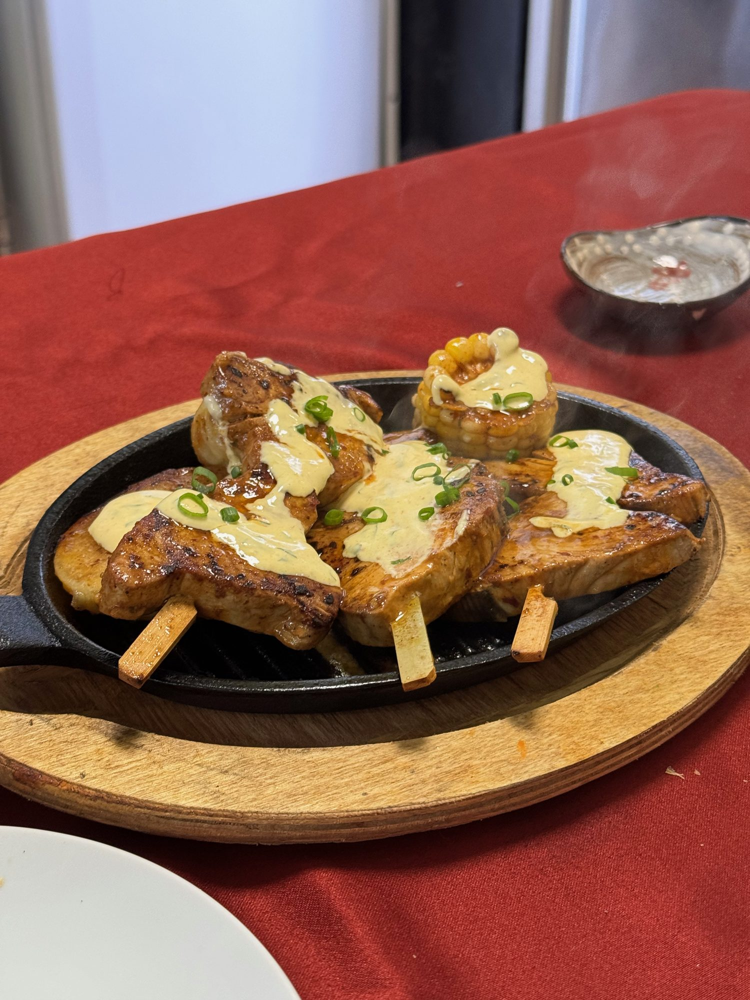
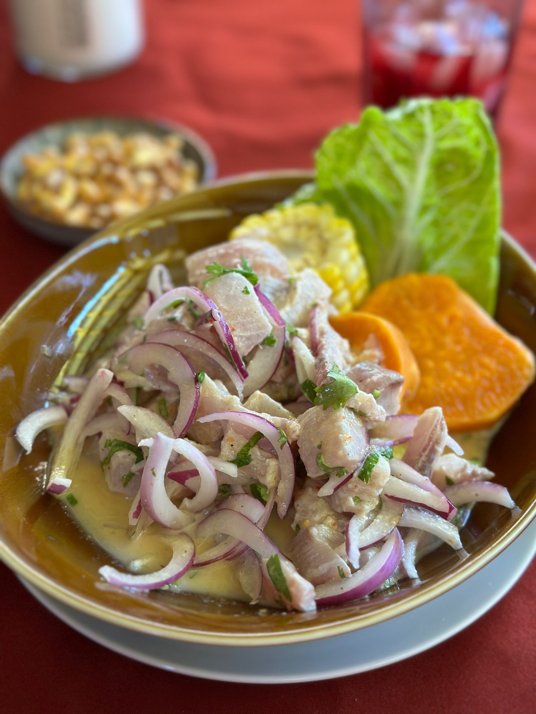
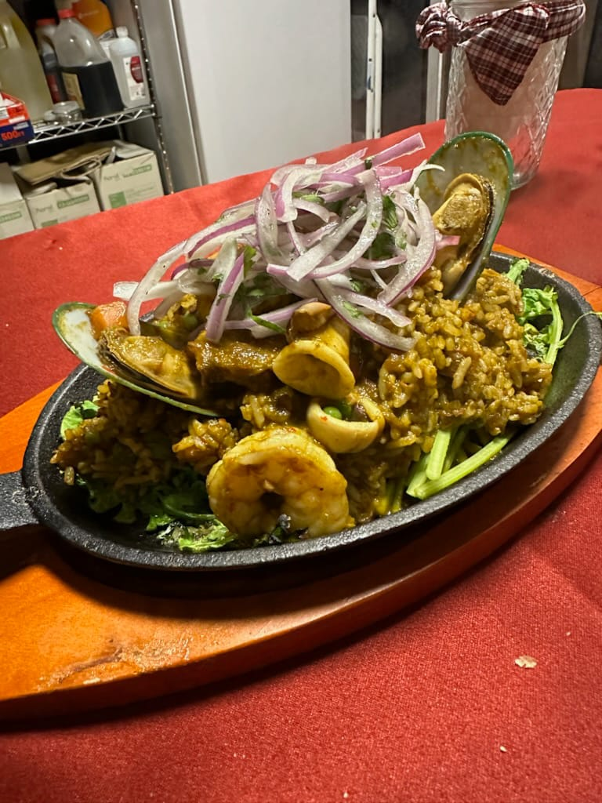
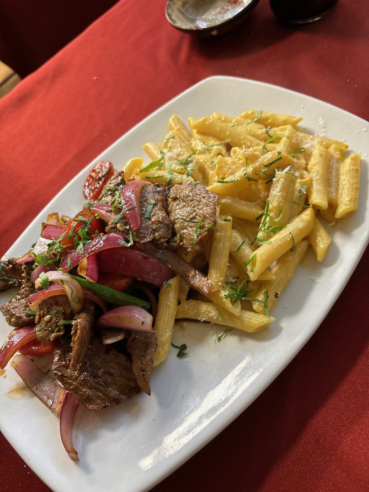
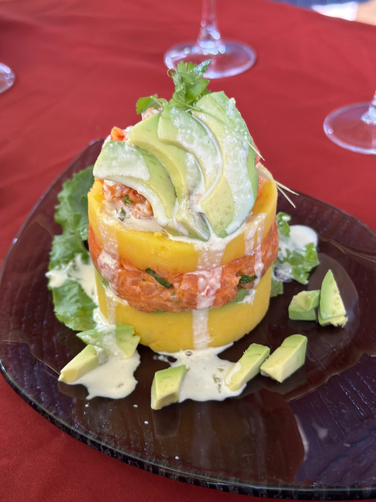
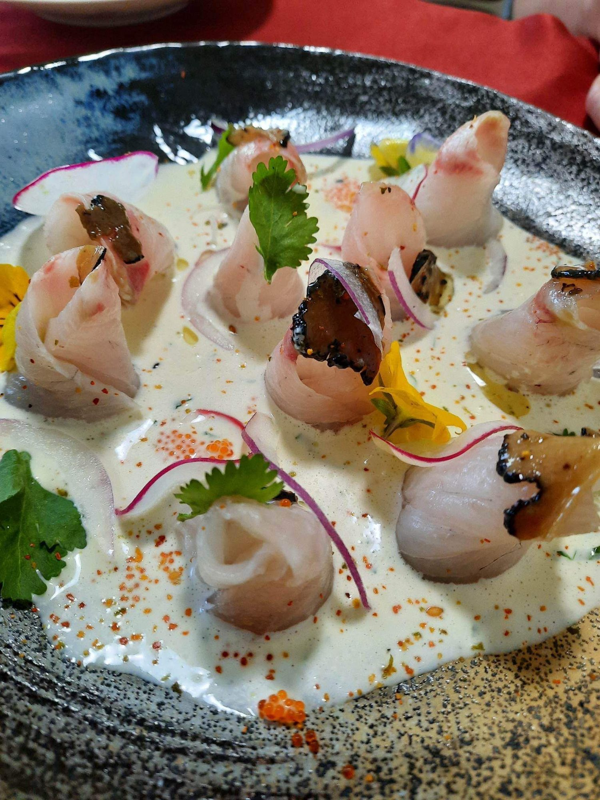
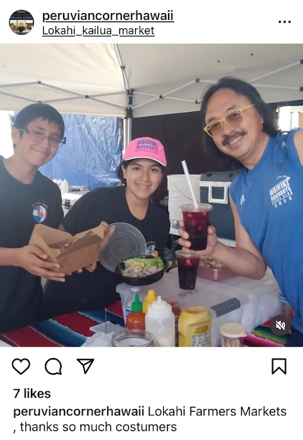

Galería
Nuestros platos








De Lima a Buenos Aires, de Buenos Aires a Hawaii. Una vida dedicada a honrar la cocina peruana con los ingredientes más frescos del Pacífico.
Ver el menú
MChef Miguel Torres nació en Lima, Perú, donde aprendió desde chico los secretos de la cocina criolla: el ceviche de las cevicherías del barrio, los anticuchos de los carritos callejeros, el lomo saltado que inventaron los inmigrantes chinos.
Pasó 10 años en Argentina perfeccionando el arte de la parrilla y el bife. Allí aprendió que la calidad del ingrediente lo es todo — una lección que hoy aplica con el pescado fresco local de Hawaii.
Llegó a Oahu y se enamoró de la North Shore. La calidad del pescado local — mahi, papio, maguro, hamachi — le permitió elevar platos como el ceviche y el tiradito a un nivel que difícilmente se encuentra fuera de Lima.
Junto a su familia, convirtió un food trailer en el Backyard Oasis de Waialua: un rincón peruano en el Pacífico, donde las mesas pintadas a mano y las flores frescas son tan importantes como los platos que salen de la cocina.
Contactar para cateringNacido en Lima, crecido entre cevicherías de barrio y los carritos de anticuchos de las esquinas. La cocina criolla como lenguaje nativo.
Diez años perfeccionando el arte del fuego y la parrilla. El bife argentino como segunda naturaleza. La técnica de la plancha como emblema personal.
Primer puesto en el Waialua Sugar Mill Market. Un food trailer, una familia, y los sabores de tres culturas en la North Shore de Oahu.
De food trailer a restaurante. El Backyard Oasis en Goodale Ave, Waialua — con espacio de restaurante, mesas pintadas a mano y flores frescas.
Mari Taketa escribe en Honolulu Magazine sobre "el calidad de wonderland" de Peruvian Corner. El reconocimiento llega, pero la pasión sigue igual.
Detrás de cada plato hay una historia, y detrás de Peruvian Corner hay una familia. Fanny Torres es la otra mitad de esta empresa: la que organiza, la que cuida los detalles, la que asegura que cada visita al Backyard Oasis se sienta como visitar a alguien de confianza.
Las mesas pintadas a mano, las flores frescas en los picnic tables blancos bajo las sombrillas rojas — esos detalles son Fanny. El ambiente de "wonderland" que describe Honolulu Magazine es el resultado de dos personas trabajando con el mismo amor.






Chef Miguel disponible para catering en eventos privados, festivales, cumpleaños y celebraciones. Anticuchos de corazón de res cocinados en vivo, bandeja de arroz con pollo, ají de gallina para la multitud.
Consultar disponibilidad